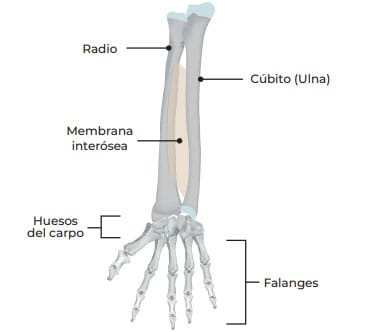
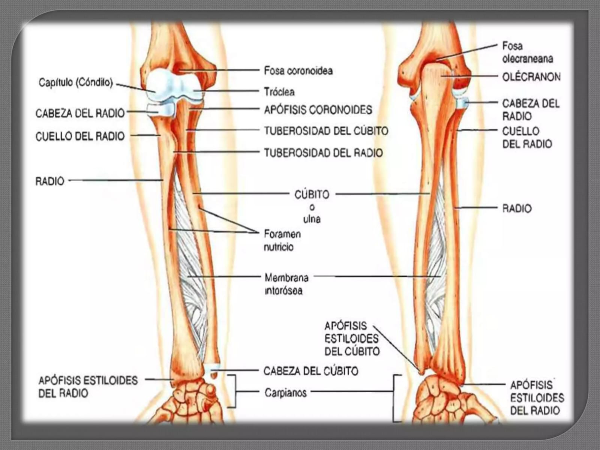

```html
<!DOCTYPE html>
<html lang="es">
<head>
<meta charset="UTF-8">
<meta name="viewport" content="width=device-width, initial-scale=1.0">

<title>Huesos del Antebrazo</title>

<style>

*{
    margin:0;
    padding:0;
    box-sizing:border-box;
    font-family:'Segoe UI',sans-serif;
}

body{
    background:linear-gradient(135deg,#e8eaf6,#c5cae9);
    color:#1a237e;
    line-height:1.6;
}

/* ENCABEZADO */

.header-top{
    background:#0d47a1;
    color:white;
    padding:15px 30px;
    display:flex;
    justify-content:space-between;
    align-items:center;
}

.logo-area{
    display:flex;
    align-items:center;
    gap:15px;
}

.logo-area img{
    width:70px;
}

.autor{
    font-weight:bold;
}

header{
    background:linear-gradient(90deg,#1565c0,#0d47a1);
    color:white;
    text-align:center;
    padding:50px 20px;
}

header h1{
    font-size:3rem;
}

header p{
    font-size:1.2rem;
}

/* CONTENIDO */

.container{
    width:90%;
    max-width:1200px;
    margin:auto;
    padding:40px 0;
}

.card{
    background:white;
    padding:25px;
    margin-bottom:25px;
    border-radius:15px;
    box-shadow:0 4px 12px rgba(0,0,0,.1);
}

h2{
    color:#0d47a1;
    border-left:6px solid #1565c0;
    padding-left:10px;
    margin-bottom:15px;
}

ul{
    padding-left:25px;
}

li{
    margin-bottom:8px;
}

.highlight{
    background:#e3f2fd;
    border-left:5px solid #1565c0;
    padding:15px;
    border-radius:10px;
}

/* GALERÍA */

.galeria{
    display:grid;
    grid-template-columns:repeat(auto-fit,minmax(350px,1fr));
    gap:25px;
    margin-top:20px;
}

.imagen{
    text-align:center;
}

.imagen img{
    width:100%;
    border-radius:15px;
    box-shadow:0 4px 12px rgba(0,0,0,.2);
}

.imagen h3{
    margin-top:10px;
    color:#0d47a1;
}

.grid{
    display:grid;
    grid-template-columns:repeat(auto-fit,minmax(350px,1fr));
    gap:20px;
}

footer{
    background:#0d47a1;
    color:white;
    text-align:center;
    padding:20px;
    margin-top:30px;
}

</style>
</head>

<body>

<div class="header-top">

    <div class="logo-area">
        
        <h3>Tecnológico Boliviano Alemán</h3>
    </div>

    <div class="autor">
        Por: Jhery Quito Rivera
    </div>

</div>

<header>

    <h1>Huesos del Antebrazo</h1>

    <p>Radio y Ulna (Cúbito)</p>

</header>

<div class="container">

    <div class="card">

        <h2>Descripción General</h2>

        <p>
            El antebrazo está formado por dos huesos:
        </p>

        <ul>
            <li><strong>Radio:</strong> ubicado en el lado del pulgar.</li>
            <li><strong>Ulna o Cúbito:</strong> ubicado en el lado del meñique.</li>
        </ul>

    </div>

    <div class="card">

        <h2>Ubicación y Articulaciones</h2>

        <div class="galeria">

            <div class="imagen">
                
                <h3>Ubicación del Radio y la Ulna</h3>
            </div>

            <div class="imagen">
                
                <h3>Articulaciones del Antebrazo</h3>
            </div>

        </div>

    </div>

    <div class="card">

        <h2>Ubicación</h2>

        <ul>
            <li>Se encuentran entre el húmero y los huesos de la mano.</li>
            <li>El radio está lateralmente (lado del pulgar).</li>
            <li>La ulna está medialmente (lado del meñique).</li>
        </ul>

    </div>

    <div class="grid">

        <div class="card">

            <h2>Radio</h2>

            <h3>Función</h3>

            <ul>
                <li>Participa en la pronación y supinación.</li>
                <li>Forma gran parte de la articulación de la muñeca.</li>
            </ul>

            <h3>Articulaciones</h3>

            <ul>
                <li>Con el húmero (capitulum).</li>
                <li>Con la ulna.</li>
                <li>Con los huesos del carpo.</li>
            </ul>

            <h3>Partes Principales</h3>

            <ul>
                <li>Cabeza del radio.</li>
                <li>Cuello del radio.</li>
                <li>Tuberosidad radial.</li>
                <li>Apófisis estiloides del radio.</li>
            </ul>

            <h3>Inserción Importante</h3>

            <ul>
                <li>Bíceps braquial.</li>
            </ul>

        </div>

        <div class="card">

            <h2>Ulna (Cúbito)</h2>

            <h3>Función</h3>

            <ul>
                <li>Da estabilidad al antebrazo.</li>
                <li>Participa principalmente en la articulación del codo.</li>
            </ul>

            <h3>Articulaciones</h3>

            <ul>
                <li>Con el húmero (tróclea).</li>
                <li>Con el radio.</li>
            </ul>

            <h3>Partes Principales</h3>

            <ul>
                <li>Olécranon.</li>
                <li>Apófisis coronoides.</li>
                <li>Incisura troclear.</li>
                <li>Cabeza de la ulna.</li>
                <li>Apófisis estiloides de la ulna.</li>
            </ul>

            <h3>Inserción Importante</h3>

            <ul>
                <li>Tríceps braquial (olécranon).</li>
            </ul>

        </div>

    </div>

    <div class="grid">

        <div class="card">

            <h2>Inervación Relacionada</h2>

            <ul>
                <li>Nervio radial.</li>
                <li>Nervio mediano.</li>
                <li>Nervio cubital (ulnar).</li>
            </ul>

        </div>

        <div class="card">

            <h2>Irrigación</h2>

            <ul>
                <li>Arteria radial.</li>
                <li>Arteria cubital (ulnar).</li>
                <li>Arteria interósea anterior.</li>
                <li>Arteria interósea posterior.</li>
            </ul>

        </div>

    </div>

    <div class="card">

        <h2>Movimientos del Antebrazo</h2>

        <div class="highlight">

            <ul>
                <li><strong>Pronación:</strong> girar la palma hacia abajo.</li>
                <li><strong>Supinación:</strong> girar la palma hacia arriba.</li>
                <li><strong>Flexión del codo:</strong> acercar el antebrazo al brazo.</li>
                <li><strong>Extensión del codo:</strong> alejar el antebrazo del brazo.</li>
            </ul>

        </div>

    </div>

</div>

<footer>
Anatomía Humana • Huesos del Antebrazo • Tecnológico Boliviano Alemán
</footer>

</body>
</html>
```
